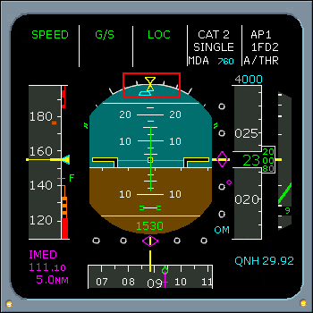

Primary Flight Display Symbols
Side Slip Index Beta Target
Side Slip Index/Beta Target indicates lateral acceleration on the ground.
In flight, when beta target is centered, a small side slip is present for optimum airplane performance.
If one engine fails, the FAC modifies the sideslip indication to show the pilot how much rudder to use to get the best climb performance. In takeoff configuration when the FAC detects asymmectric thrust (35% N1) and at least one engine is 80% N1, the sideslip indication changes from yellow to blue. Zero the indication to get the best climb performance.
Side slip index changes to beta target when:
- CONF 1, 2, or 3 is selected, and
- Any engine EPR exceeds 1.25, and
- There is a difference between EPRs exceeding .25
|  |
| < PREVIOUS | NEXT > |